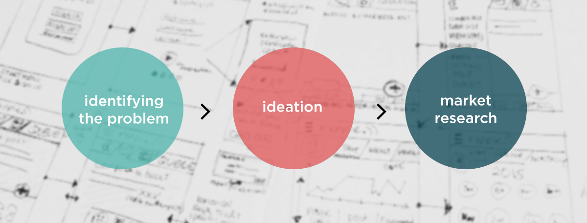
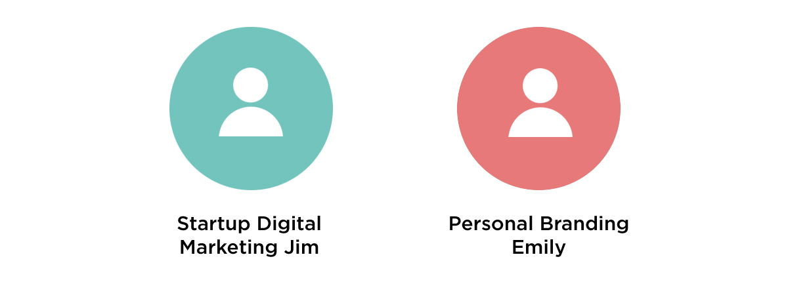
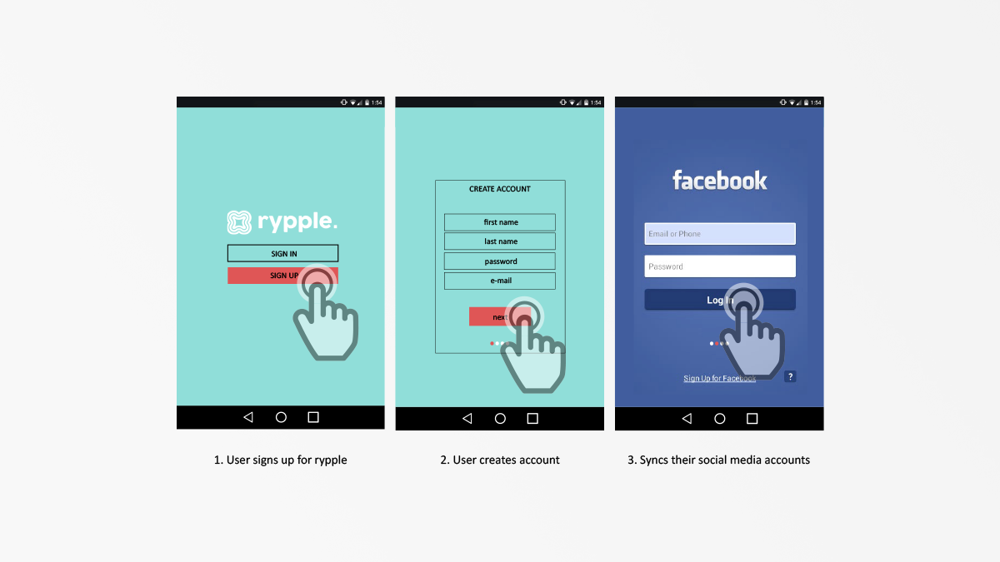
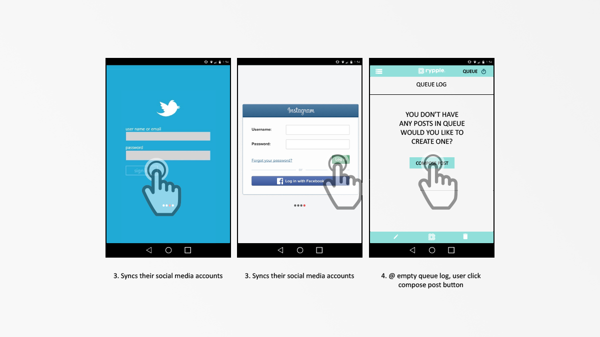
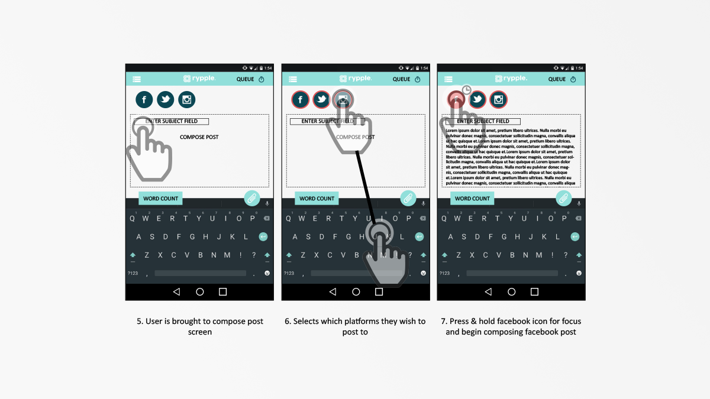

RYPPLE is a mobile application designed to assist individuals in expanding their social outreach, especially those who benefit from constantly promoting and raising awareness of their business/profession on a public platform.
As an agile team we targeted 3 major social platforms including; Facebook, Twitter, and Google+ and integrated it all into one location where users can easily implement their social media strategies. Not only will
individuals be able to export the posts to all platforms simultaneously, but will also be able to choose to queue them for peak hours and maximum exposure.
I was responsible for the user interface design and testing as well as researching other design principles for competitve applicationss
Once we had decided on rypple as our app idea, the next step was to perform a market analysis on current social media organizer applications on the Google Play Store, so we could determine what was required to be unique. Everypost was our benchmark of choice, as its simple UI was something we wanted to strive to parallel, if not exceed.
Our next course of action was to construct and expand our ideal user persona to guide our future development choices and features that this ideal user would require.
The app, rypple, centralizes posting to social media platforms, such as Facebook, Twitter and Instagram, in one app. The app is designed to help individuals who wish to expand their outreach. In addition, rypple keeps track of statistics: likes, shares and retweets. With the statistics, analyzing post activity helps users to track engagement with potential customers and followers. Recognizing that time is important, rypple cuts down on time spent logging into different social media platforms, typing up similar posts and posting; it allows time to be spent on other important tasks. Users are able to manage their posts by queuing them and rypple will subsequently post the content at the specified date and time. Unlike similar apps, rypple provides a free service that does not limit the user with performance, number of statistics reports available, or number of social media platforms to sync.
Through an iterative process we began with paper prototypes for a simple walkthrough of an usage scenario and adjusted accordingly after evaluation and feedback to refine the user experience.
  Finally, front-end development and coding of rypple began and production of the initial login screen was established. This was the first time external users were exposed to the prototype of the rypple user interface flow. Participants were gathered to iterate through the design structure and their feedback would assist the design refinement process. By critically analysing their comments on what would be seen as potential issues for user interaction, relevant adjustments were made. Alongside external feedback, the team also provided constructive criticism based on heuristic guidelines we had chosen and aimed to achieve. These invaluable observations and insight allowed us to create the final design for the most optimal user experience.